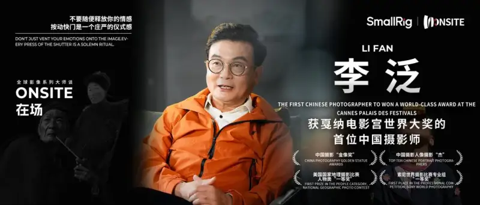
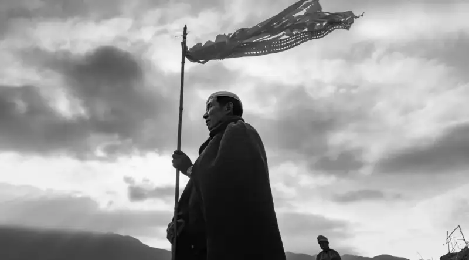
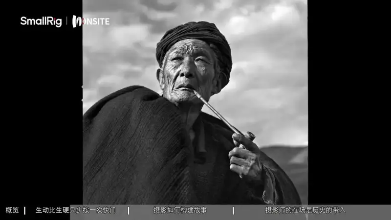
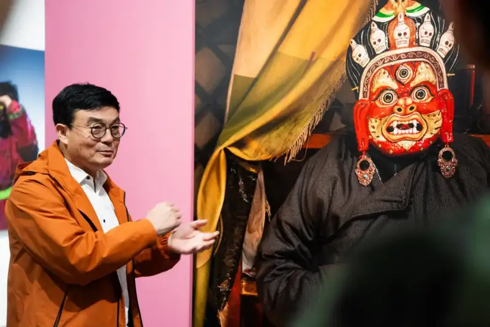
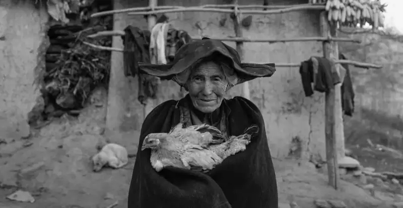
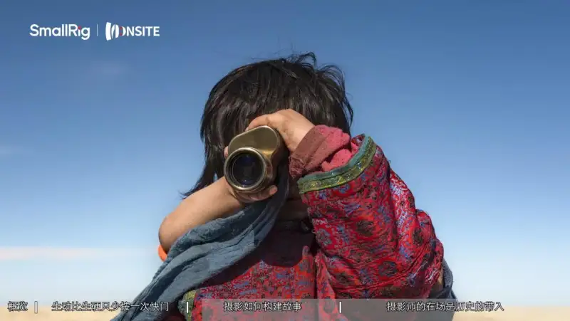
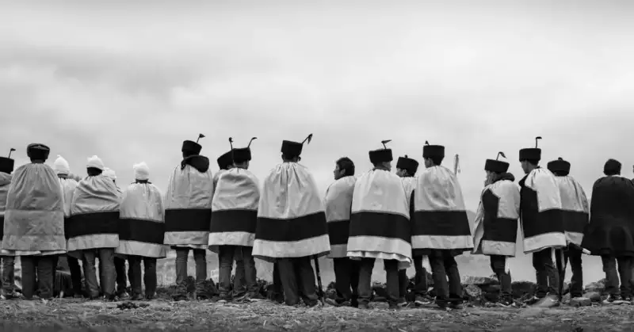
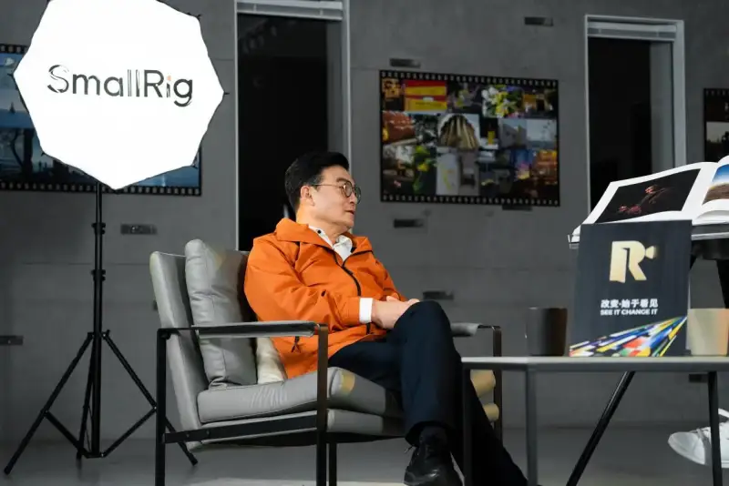
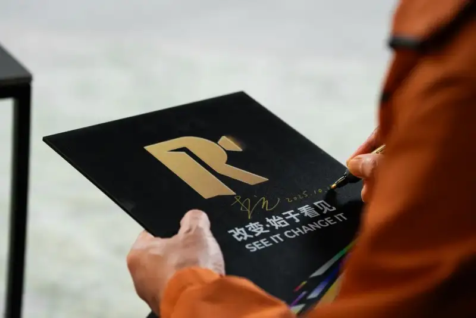

Li Fan has worked in photography for 45 years. He has always measured the world on foot, recorded the changes of the times with his lens, and shown the full range of life in images. Some say: "Li Fan lens writes narrative poetry with warmth."
Looking back on 45 years, Li Fan has traveled nearly every region of China. For more than 20 years he has photographed the Yi people of the Daliang Mountains. He went to Daliang 46 times and used his images to show the thousand-year Yi culture. He spent three years and made six trips deep into Bangladesh to record the daily life of Bangladeshi people. He has visited every country on the Silk Road, using his lens as a blade to carve lasting works. As a photographer, Li Fan has always observed the world through the eyes of a sociologist, recording local customs and ways of life. His goal is to leave the world a first-hand record of history.
Li Fan, the first Chinese photographer to win the World Award at the Cannes Palais
In the age of universal photography, Li Fan still holds to his original drive. Starting from his own style, he keeps seeking breakthroughs in innovation. He wants to build a more unfamiliar visual language and way of expression. As he said on the SmallRig In Place set: "Never race against technology. Race against the time of this age, and against history. You must record history, so that history remembers you. We look back at history, stand in the present, and look to the future."
The Photographer Is the Director
“"Does a photographer have no ideas, and only press the shutter?" Li Fan rejects the layperson stereotype of the photographer. Talking with the SmallRig In Place host, he said firmly: "The photographer is the director."
For Li Fan, a film director arranges every element in order in the place he wants it, to tell the story he means to tell. A photographer must instantly arrange the people, events, and places of a real scene in his mind, and use the lens to complete the meaning he wants.

Li Fan work - Silk Road image series
For this reason, photographers treat the people in a real scene as actors. Li Fan has his own casting rule: "People with strong ethnic symbols photograph well. You can see the dramatic tension at once." Of course, this depends on the photographer eye, the angle, the light, and where the person is placed. To photograph a person is to treat the environment as a stage. The moment the curtain rises, the actor silently tells his story.
Li Fan most classic work is the Yi elder of Daliang. But the shoot was not easy. To keep outsiders away, the Yi people live high up, in good land, and on steep ground. This is part of their culture, but it clearly makes photography harder.

Li Fan work - Yi elder of Daliang
Before a shoot, people often asked him: "Can you just go there and take photos?" They did not share a language, but Li Fan felt that if he was sincere and friendly enough, people would accept him.
By chance, Li Fan took the photo that he will carry for life. When he walked into a home, an Yi elder with a cane came to the door. The elder was deeply wrinkled, but his strong, refined bone structure was perfect for the lens, an ideal subject. Li Fan felt he had met his muse. He sat down and talked with the elder.
As they talked, almost without thinking, Li Fan pressed the shutter. He took the photo that shocked the world, and won a world lifetime achievement award at the Cannes Palais in France. Two years later, he gave the print to the elder son. When the young man saw it, he said to Li Fan with emotion: "My father never had a single photo taken in his whole life." A quiet sense of achievement filled Li Fan at once.
When photographing Mongolians, Li Fan again used a director mind. How do you find detail inside the identical yurts? On site he found a cupboard. He drew back the curtain in front of it and sat a masked Mongolian man before it. The mask is history, and the watch is time. Frozen history tells the Mongolian story through time. These are the meanings Li Fan gave the photo.

Li Fan and his work - Masked Mongolian
The aesthetician Teng Shouyao wrote of Li Fan work: "The shutter fires in an instant, but that instant reveals the eternal. What you see are things in space, yet they are bound together with the subject expression and with time and history in the heart. This demands a high command of the image. But more important is the photographer inner humanistic depth and creative passion."
In every photo he takes, Li Fan feels compassion for all living things. He keeps going deeper in his work. With a kind of stubborn, foolish drive, he walked the Silk Road of the new age, and preserved images from the southwest and northwest that have since vanished. As he talked, his open, proud laugh filled the room. He told the SmallRig In Place host, hardly hiding his pride: "When we measure the earth on foot, we must let the lens keep up with our steps."
Never race against technology
Some history lives in books, and we must read it. Other history is worn by weather, and we must go there. When you record life with a lens, you are recording history. The camera is not only an extension of technology. It is a bridge between the creator and the world.
From August 19, 1839 to today, photography has a history of 186 years. Technology has completely overturned the old film way. In the age of universal photography, has photography become easier, or harder?
SmallRig In Place talks to Li Fan, the first Chinese photographer to win the World Award at the Cannes Palais
The SmallRig In Place host put this question to Li Fan. He shook his head. "Digital cameras put many press photographers out of work. Newspaper photo staff were cut almost to nothing. Now everyone in the world picks up a camera and strives for one good picture. It gets harder and harder. The first purpose of photography has moved from recording to expression. That is the logic of the times.”Yet the instant review of digital is convenient for reshoots, but it removes the expectation of the unknown that film gave the photographer.
In the age of universal photography, how should a pro photographer fight anxiety and shoot from a unique angle? Li Fan offered his own belief: "A photo is a universal language that crosses nations and peoples. If the photo can speak for itself, every word you add is extra. If the photo cannot speak, nothing you say, even if you cry, will help."

Li Fan work - Silk Road image series
A strong image brings in emotion, place, and history. An image is never limited to its four borders. If a picture is fully understood at once, it has failed. If it makes people imagine the world beyond the frame, it is a master shot. That depends on the photographer own depth and unique eye. The photographer must never race against technology. He must race against the time of the age, and against history.
When he photographed two boys with a telescope, the boys took turns looking through it. Li Fan thought about how to bring both into one frame. He decided to merge them, so that two pairs of eyes met in one eyepiece. No faces, no expressions are visible. Then a boy with bare arms leans in from behind. This wordless, deeply metaphorical method holds the richest feeling, and leaves room for many readings.

Li Fan and his work - Boys with a telescope
The debate of Cao Gui says: "The first drumbeat raises the spirit, the second weakens it, the third exhausts it." Photography works the same way. Li Fan believes only the first press of the shutter is the decisive moment. The photographer is like a sniper, who must hit the target with one shot.
After all, "The first life shot is vivid. firstThe second is stiff, because when the subject knows they are being seen, they act stiffly. Press the shutter only once. If it works, it works. If not, let it go." When the subject forgets the camera is there, they show their truest state. That truth is the most precious quality of humanistic photography.
Photography has no answer
In 45 years, Li Fan has won countless awards, even the highest personal honor in Chinese photography, the China Photography Gold Award for creative work. Yet he feels he has no body of work. Looking down the lens, he told the SmallRig In Place host about his view: "Photography has no answer, and no final goal. There is only moving on, exploring, and measuring the world on foot."

Li Fan work - Silk Road image series
Li Fan always values work that has feeling, soul, life, and room for the imagination. "An image must be full of light, and also make people think. It must give others endless wonder and inspiration." He hopes to make work that leads society and changes the world. He names Steve McCurry The Girl, and Xie Hailong Big Eyes. Every photographer spends a lifetime trying to make a work that moves the world.
For Li Fan, an award is only history. It means people recognize your work at that stage. But over time, a single photo may not influence others, or act as a pioneer. It rarely becomes a work known to all of the age, let alone one that shapes national development or changes national culture. He told the SmallRig In Place host plainly: "As long as I have not put down the camera, my best photo has not yet appeared."

SmallRig In Place talks to Li Fan, the first Chinese photographer to win the World Award at the Cannes Palais
On the relation of technique and art, Li Fan sees technique as the base that supports artistic expression. But today many photography books are just collections of manuals. Once you can operate the gear, the rest is up to your overall depth, your knowledge, your values, and your life experience.
Photography can teach only how to operate the gear and the history of the medium. The rest is unknown, and the photographer must keep exploring. At the same time, self-study should run through a whole life. Every photography enthusiast should repeat the simple things, to make a finite life more valuable.
As a photographer and artist, Li Fan wants to tell young shooters: "Do not talk about art before 40. Art is a superstructure. It has no fixed meaning. But its greatest meaning is that it changes your life and keeps you happy." He advises young photographers to think broadly about what images people in the future will need.

SmallRig In Place talks to Li Fan, the first Chinese photographer to win the World Award at the Cannes Palais
Today every field crosses into others to find new ways of expression. Photography should also cross into other subjects, to create more visual languages. Li Fan keeps looking for ways to cross over, to give audiences fresh visual ideas. After all: "Art most fears forming a cocoon. A cocoon means the mind has stopped. Break the cocoon and something new is born. The new takes hold. This cycle, over and over, is the endless pursuit of a fine photographer."